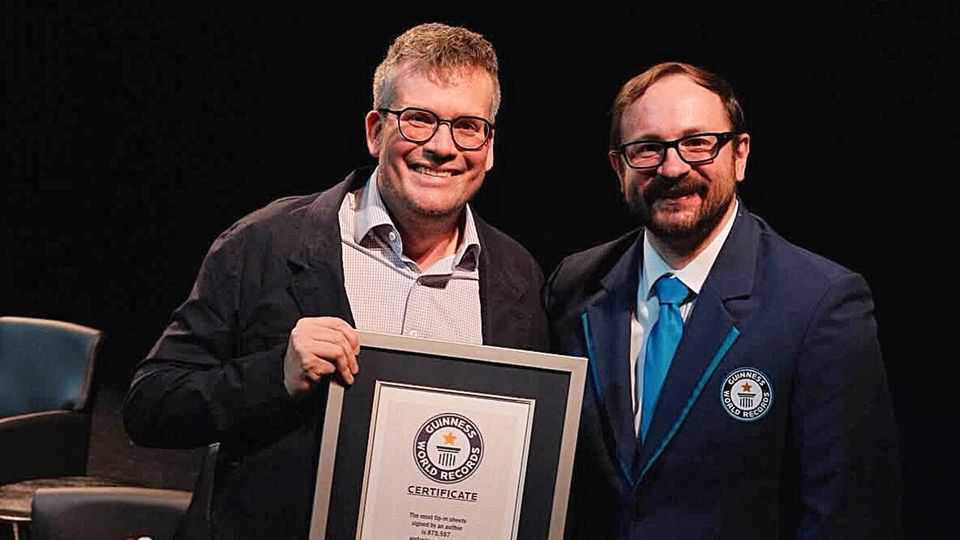

John Green, a hit young-adult author, is now writing for adults
His latest novel explores social-media stardom; his own career has tracked it, too

Oct 29th 2026
John Green has many fans, among them Taylor Swift, who once called him “My. Favourite. Author.” He has sold over 50m copies of his young-adult books worldwide; more people have bought “The Fault in Our Stars”, a romance from 2012 about two young cancer patients, than “The Grapes of Wrath” or “Catch-22”. However, some have also found fault with the star writer. His first novel, “Looking for Alaska” (2005), has been the most banned book in American schools since PEN America, a free-speech group, began counting in 2021. (It contains swearing, drinking and an awkward sex scene censured as “pornographic”.)
Mr Green’s books offer earnest aphorisms that teenagers find profound, such as: “That’s the thing about pain, it demands to be felt.” He has written cringey musings (“my thoughts are stars I can’t fathom into constellations”) and musings on cringiness (“‘cringe’ is what people who can’t feel things call feelings”). Now Mr Green is back on top of the bestseller list. “Hollywood, Ending”, his first tale for adults, follows two actors in their 20s who become famous overnight.
“Hollywood, Ending” considers attention in the age of social media. Few authors understand the power of the internet quite like Mr Green: his career reveals how the relationship between writers and readers is changing in the digital age. In 2007, just two years after YouTube launched, Mr Green and his brother started a channel called Vlogbrothers, posting about their everyday lives. They were an unashamedly geeky pair: their fans were “nerdfighters” who came together “to do awesome things…and fight against world suck”.
The whole thing was terribly corny—but terribly popular. The Green brothers built a nerdy media empire—which includes educational videos about science and history—that has accumulated more than 6bn views on YouTube.
Mr Green’s online profile helped boost his book sales. He would read excerpts of his drafts for his fans on YouTube, or reveal he did not yet have a cover design (fans would then eagerly make and post hundreds of potential covers). He also promised to sign every pre-order, driving his books to the top of bestseller lists before they were published. He did this so often, in fact, that he was awarded a Guinness World Record in September for the most autograph pages ever signed by an author (see picture).
His fanbase also helped him understand who he was writing for. Authors of young-adult tales are often asked “When are you going to write a real book?” says Mr Green. He is “careful not to engage with that cliché because I think some of the most important novels of the last few decades have been written for teenagers”.
In the 2010s, when young-adult shelves were stuffed with fantasy romances such as “Twilight” or dystopian sagas like “The Hunger Games”, Mr Green instead published books about normal folk. He enjoyed interacting with his readers online and even based some of his characters on fans he met: Hazel Grace Lancaster, the protagonist of “The Fault in Our Stars”, was modelled in part on Esther Grace Earl, a “nerdfighter” who died of thyroid cancer in 2010. His books inspired other emotional, realistic books for teens, a trend some dubbed “GreenLit”.
Mr Green’s sincere, sentimental style just about worked in teen fiction. But does his book for adults hold up? “Hollywood, Ending” is more sophisticated than his earlier books. It muses on the entertainment industry, trauma and how well you can ever know someone. Yet some of the lines are less neat aphorisms than clunky tautologies: “The miracle of love is that yes, I am here and you are there, but the door is ajar…we break down the door with love.”
Fans will repost that sort of sappy line on their social-media feeds. Some may even notice that, as the author puts it, “we continue to come of age in different ways as we grow up.” John Green’s readers may have grown up—but they do not seem likely to outgrow him. ■